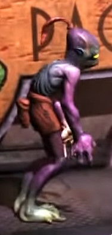
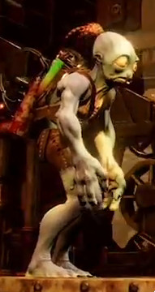
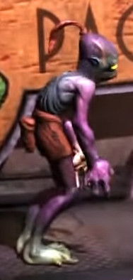
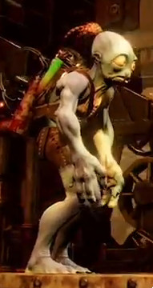
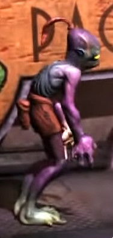
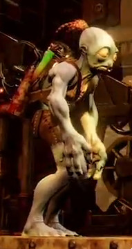
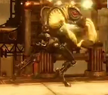
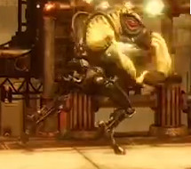

Since Soulstorm features a lot of things Exoddus and New 'n' Tasty also feature, I figured it would be interesting to see the similarities and differences. All pictures come from HD videos and I've tried to take the pictures from similar distances.


Let's start with Abe since he received some of the largest changes. He's no longer blue as in Exoddus, however, he's also not purple, like in NnT, instead he now has a slightly sickly grayish-purplish skin tone, along with more detailed anatomy and actual feathers instead of a ponytail.
The color of chanting changed the exact opposite way: Similarly to Abe it started out as blue, then it became grayish-purplish in NnT and finally turned into purple in Soulstorm.


Instead of their color, the working Mudokons of Soulstorm are differentiated by their uniforms and working hats, that they throw away, when Abe calls to them. Their skin color is now only slightly darker than Abe's.
 

Next up Sligs: The old HUD Visor (the single red slit on the mask) seems to be gone for good and all Sligs instead wear the Pilot Googles. Also Soulstorm's Sligs have much more detailed pants and masks. Also, their skin color has went from greenish in AE, to yellow-green in NnT and definitely yellow in Soulstorm.
While NnT and Exoddus feature similar Bird Portals, aside from NnT's yellowish ring, the one in Soulstorm looks quite different. It is much smaller and rounder and it also has some purple lights coming out of it's centre.


However, there doesn't seem to be any major changes between NnT's version of the open portal and Soulstorm's (other than slightly different light emanating from it).


Similarly to above, the Security Orbs also didn't change much between NnT and Soulstorm, except the Orbs of Soulstorm occasionally emit sparks of red electricity.

Since vending machines will be a prevalent mechanic in Soulstorm, the Brew dispensers themselves have received a similar design, making them quite different compared to Exoddus' dispensers. However, the signature laughing Glukkon remained.


Other than the obvious graphical changes, Soulstorm's status indicator screens also show the status of Sligs.


The two trains are quite similar, however, Soulstorm's has received a few minor changes on the front and on the little tower on the top of the train. Also of course Soulstorm's train is a bit more detailed.